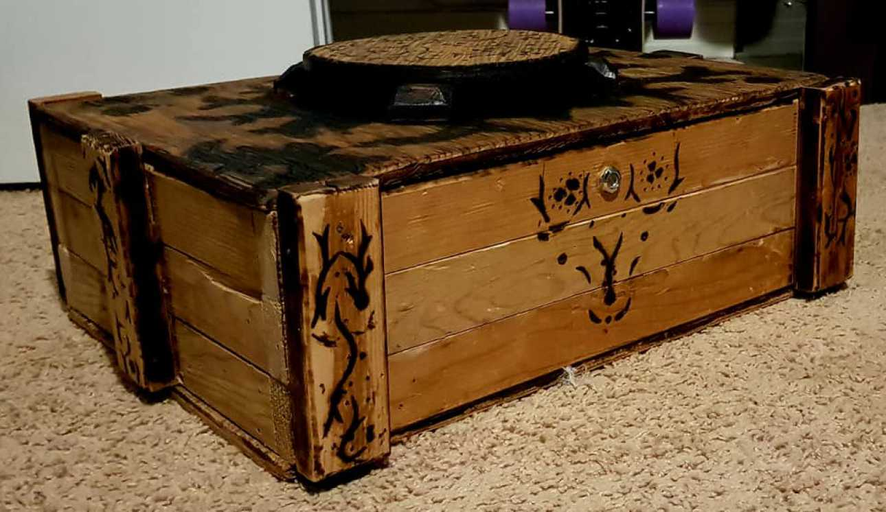
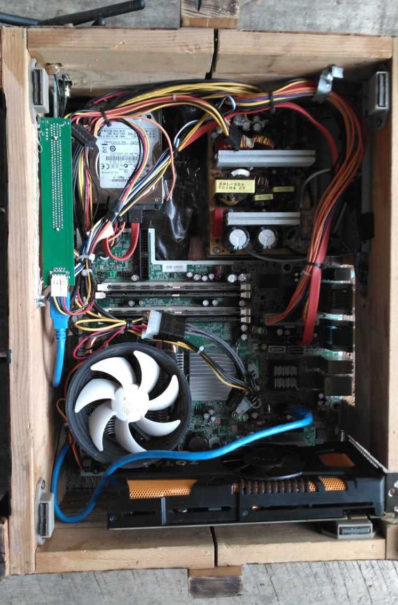
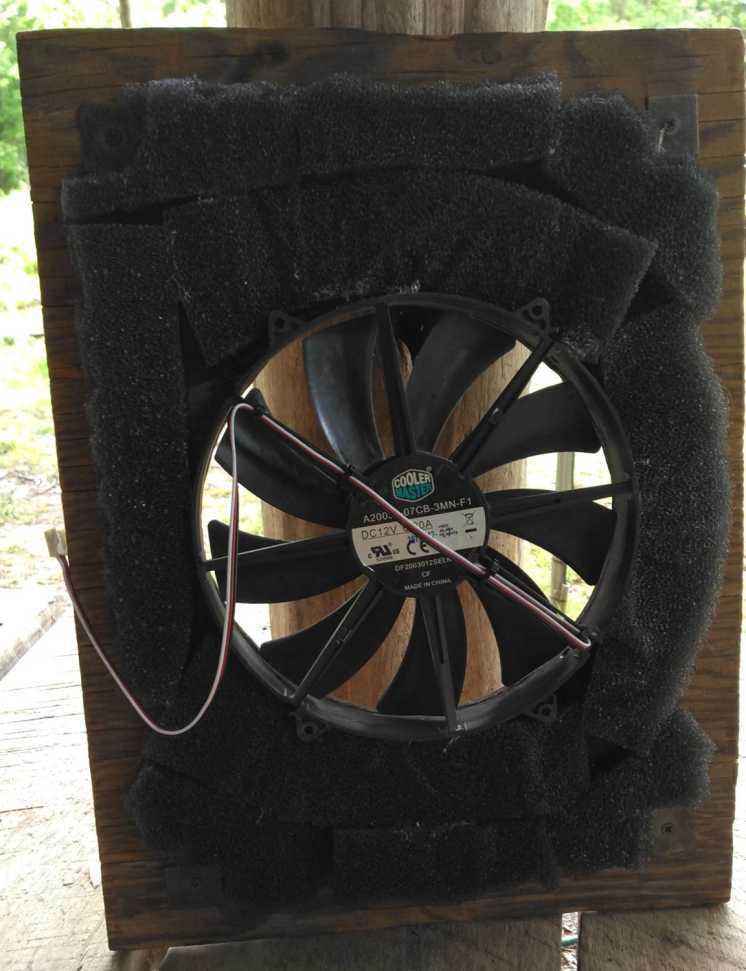

|  |
About this PC |
|
Next I got to nailing.
This is pretty simple so I won't bore you but I would like to point out coming up with somewhat creative design solutions for keeping it together does make for a more interesting case.
Personally I made these short bits to go vertically, then made them fairly semetric and placed strategically before nailing them.
This saved me from doing anything involving actual woodworking skill and gave me more options for making the case eleborate later. |
|
|  |
Looking on the inside you'll notice some. . particular design choices happening.
Due to the nature of the wood I was workng with I needed to make the shorter side a bit more broken up.
More importantly the case is very tightly packed.
This was to make setting it on top of a desk to use as a monitor stand easier, it does come at the price of upgradability.
Due to the abnormal shape and size of the motherboard I used that will be the only board able to fit in the case -meaning no more upgrades past this.
Also you might have noticed the power supply. |
|
Now to the lid itself. |
 |
Other Thoughts
My biggest complaint would probably be the amount of detailing work done.
Originally I was planning to do some wood carving as well as the burning but I wanted to give this to a friend as soon as possible so 'good enough' was my policy.
Just getting it to this point felt like it took four times as long as it needed to.
As for the burning itself: some of it is okay but alot of it is garbage.
This was partially from inexperience but had a lot to do with ym tools at hand.
All I had to do the burning with was a gas station lighter and a garbage Rosewill soldering iron (don't reccomend).
If given a second chance I'd like to try toying with painting something flamable like gasoline onto the parts I wanted to burn before trying to gas station lighter it.
That seems like it might be a decent way to go about it?
I'd also advice against whatever wood I used for the top and bottom.
It's awful to work with, especially when warped by weather.
I used it because of materials at hand and wanting to have a large sheet of wood for the top and bottom.
In case you're curious about the specs at hand. .
A Core2Quad 8400 is the powerhouse behind our computing paired with a blisteringly fast GTX460.
It also has a whopping 8Gb of ram and a 320HDD I wouldn't trust for anything more important than a photo of last nights dinner.
After the challege of the 50$ computer was done I did throw in a wifi card, which is what you see the blue usb cable going into.
My friend couldn't access a wall jack and I wasn't going to screw them for a budget challege.
All together it ran yesterday's AAA games just fine.
Borderlands 2 and Fallout 3 both ran on high at 60 fps with no frame drops.